Companion to ACADIA_2026_SOFTWARE_REPORT.md. This
document pairs short prose with structured "diagram-ready" blocks. Each block marked
◧ DRAW is a suggestion for a figure you can lift directly. Production software =
V6.5c (March 2026), dc-dev/IO/.
Rendered figures now exist in
diagrams/(SVG + PNG, editable Mermaid/Graphviz sources indiagrams/src/; seediagrams/README.md). The ◧ DRAW blocks below are the design intent; thediagrams/IDs (A1–A11, B1–B3, A7.1–A7.7 + A7.3b, C1–C5) are the built versions. Three figure families: A/B = how the system decides; A7.x = the self-tuning loop exploded node by node; C = how all of that collapses to 12 light values (§3d–§3f). A handful of captured project images (photos/renders/screens, IDs P1–P6) live indiagrams/assets/and are embedded where relevant.
◧ Diagram P3 — the project's own system diagram (an earlier, project-made overview; the A-series figures in this guide are the cleaned, verified reconstruction of it):
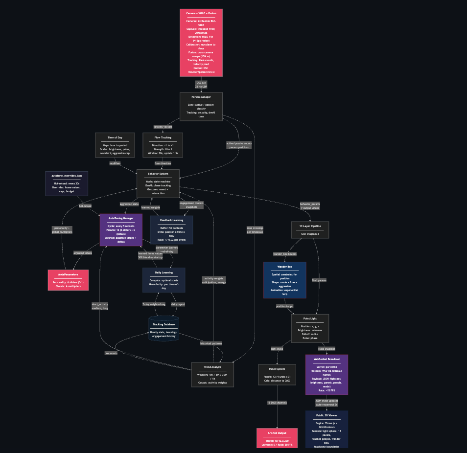
Drop Ceiling turns a sidewalk into an instrument. Two cameras watch pedestrians; a single simulated point light, hovering in a 3D field of LED panels, responds to them. What makes it more than a motion sensor is that it runs three nested control loops at three timescales — it reacts to the instant, anticipates the next hour, and reshapes its own personality over days — with an interaction budget providing the friction that keeps that self-adaptation deliberate rather than twitchy.
◧ Photo P1 — the installation in situ (Haworth Canada showroom window, 55 University Ave, Toronto; twelve panels in four sandwich-board units, seen from the sidewalk at night):
◧ Render P2 — the four units / panel geometry (each unit = 3 panels, numbered 1/2/3; the layout the whole spatial model is built on, §15d):
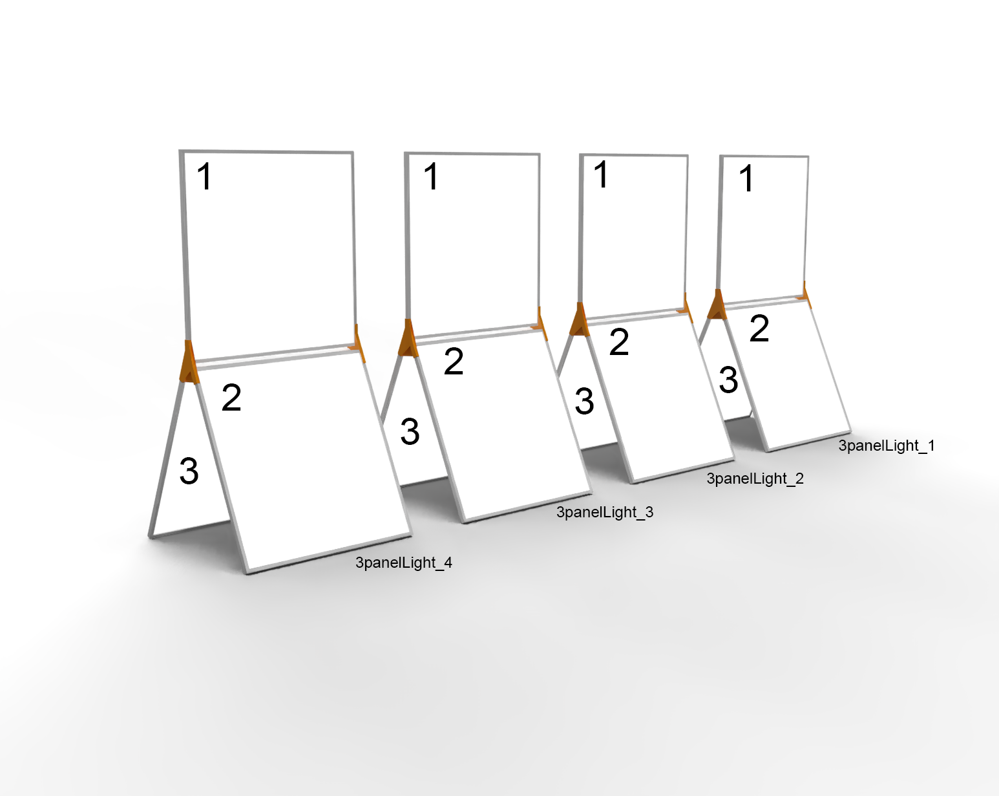
◧ Figure A1 — Top-level pipeline (left-to-right signal flow):
Three OS processes (each a systemd service): tracker, controller,
meta-tuner. Everything they share passes through two channels — OSC (live
positions) and the SQLite database (memory).
This is the single most important diagram for the submission — it shows the project is about time and adaptation, not just reactivity.
◧ Figure A2 — Three concentric loops, fastest innermost:
| Loop | Cadence | Reads | Writes / Affects |
|---|---|---|---|
| 1 — Reaction | ~30 Hz | live OSC people + zones | light position, brightness, pulse, gesture |
| 2 — Anticipation | 1.5 s (flow), background thread (trends) | DB trend queries (1/5/30/60 min) | wander box bias, idle energy, mode selection |
| 3 — Self-tuning | 3×/day (+ midnight daily learning) | 8 h of DB history | rewrites meta-parameters via autotune_overrides.json |
The outer loops never move the light — only the reaction loop does. Instead, each loop sets the terms for the one inside it. Loop 2 changes the situation the light is responding to: it pre-positions the wander box and raises or lowers the idle energy so the light is already leaning toward arriving traffic. Loop 3 changes the disposition with which it responds to any situation at all: it slowly rewrites the personality coefficients that turn "a person is here" into a particular brightness, speed, and pulse. The first is transient and contextual; the second is persistent and characterological.
Put differently, the indirection deepens at each level: Loop 1 sets the light's values, Loop 2 sets its context, Loop 3 sets the coefficients of its reaction (and even rewrites the constants that govern its own adjustments). Three consequences follow, and they are the reason the architecture is built this way:
Prose: the behaviour mode decides the shape of a response (e.g. "follow the
nearest person, brighten, tighten the beam"). The meta-parameters decide its
flavour (eager vs reserved, brisk vs contemplative, bright vs dim). They are the
only variables the self-tuning loop is allowed to move — which is exactly why the light
can "grow a character" over weeks. Defined in MetaParameters
(light_behavior.py:429), persisted in slider_settings.json.
◧ DRAW — a 6-spoke radar/wheel; show "neutral 0.5" ring vs "as-deployed" values.
| Parameter | 0.0 ⟶ 1.0 | Light outputs it bends | As-deployed* |
|---|---|---|---|
responsiveness |
contemplative ⟶ reactive | follow-smoothing, move speed, transition time | 0.83 |
energy |
calm ⟶ lively | pulse rate, max brightness, gesture frequency | 0.77 |
attention_span |
distractible ⟶ loyal | follow-smoothing, dwell rewards, mode stickiness | 0.51 |
sociability |
reserved ⟶ eager | gesture chance, entrance flash, engaged brightness | 0.44 |
exploration |
stays put ⟶ wanders | wander-box size, wander interval, position variety | 0.71 |
memory |
forgets ⟶ avoids repeats | anti-repetition strength, trend-influence weight | 0.49 |
* from slider_settings.json — the tuner had evolved a bright, brisk, exploratory
character, far from the 0.5 neutral start. (Good caption for a "before/after personality" figure.)
◧ DRAW — a small "mixing console" of faders.
| Multiplier | Default | Effect | As-deployed |
|---|---|---|---|
brightness_global |
1.0 | master brightness gain | 2.43 |
speed_global |
1.0 | all movement speeds | 1.46 |
pulse_global |
1.0 | breathing/pulse rate | 0.66 |
follow_speed_global |
1.0 | chase speed onto a person | 0.60 |
dwell_influence |
1.0 | how strongly dwell-time bonuses apply | 0.49 |
idle_trend_weight |
1.0 | how strongly passive-zone trends bend idle | 0.51 |
◧ Figure A4 — a horizontal "signal chain" / pipeline of multiply stages:
MODE base value × META-PARAM × TIME-OF-DAY × PROXIMITY → interp → LIGHT
e.g. pulse 2500 ms × energy 0.77→0.86 × evening ×1.3 × near → ~2800 ms
e.g. brightness 8–30 × brightness_global × ×0.6 late-night × near ×1.4 → final DMX
(Worked numeric examples, kept as text since A4 shows the structure.)
Key idea for the figure: the light fixture only understands a handful of physical quantities — position, brightness min/max, pulse speed, falloff radius/shape, move speed. The whole meta-parameter system exists to colour those few numbers. The next three sub-sections (§3d–§3f) follow that thread all the way to the wire — the part the first round of diagrams under-told.
Prose: this is the point the project most needs to make legible. Everything above — two cameras, four trend windows, a tiered database, a 3×/day self-review, twelve personality meta-parameters, five modes and sixteen gestures — exists only to set the state of one virtual point light. And that light, in turn, is read by the panels as just 12 numbers: one brightness byte per panel, recomputed from scratch ~30 times a second. The drama of the piece is this collapse from enormous contextual complexity to a near-trivial output, happening continuously and live.
Be precise about the two layers (they're easy to conflate):
PointLight
object: position (x, y, z), current_brightness (intensity), falloff_radius, and
the beam shape — falloff_scale (sx, sy, sz) + falloff_rotation.
(PointLight, lightController_osc.py:2217.)StupidArtnet(TARGET_IP, UNIVERSE, 12, FPS),
:4604.)So the honest headline is many → ~9-value light state → 12 panel bytes, not "12 inputs." The light is monochrome per panel — the system computes one intensity per panel, not RGB. That restraint is part of the story: extraordinary behavioural complexity expressed through a deliberately minimal palette.
◧ Figure C1 — the hero funnel: a wide top band of all subsystems narrowing through a single waist labelled PointLight (≈9 values) and fanning back out to a row of 12 panel cells → Art-Net.
Prose: the nine scalars look trivial, but each is the sum of the whole system pressing
on one number. This is the figure that connects §3c's modulation chain to a concrete
field. (PointLight fields set in the main loop,
lightController_osc.py:4956.)
◧ DRAW — C2, a two-column table: "upstream system writes…" → "the few values".
(Rendered: diagrams/C2_light_state_pinch.)
| Light value (read at render) | What collapses into it |
|---|---|
position (x, y, z) |
mode + wander + follow + gestures (the movement layer) |
current_brightness |
mode base × brightness_global × time-of-day × proximity × dwell × breathing × bloom × entry-pulse, hard-capped at 600 (V6.5c) |
pulse_speed (→ brightness over time) |
mode base × pulse_global × time-of-day |
falloff_radius |
mode base × breathing |
falloff_scale (sx,sy,sz) + falloff_rotation |
SWEEP/FOCUS gestures × ambient oscillation × V6 falloff manager |
move_speed |
mode base × speed_global × proximity × pedestrian speed-match |
current_brightness is itself dynamic between tuning events: it pulses as
brightness_min + (brightness_max − brightness_min) × (sin(pulse_phase)+1)/2 — the
visible "breathing." (PointLight.get_brightness, :2248.)
Prose: each panel computes its own brightness from the same light state, by distance.
This is where "falloff" stops being a word and becomes the actual geometry — and where
the anisotropic shape (scale + rotation) lets a gesture stretch or steer the beam across
the panel field. (PanelSystem.calculate_brightness,
lightController_osc.py:2299.)
◧ Figure C3 — the per-panel pipeline (runs ×12 every frame):
◧ DRAW — C4, the wiring map: 4 units × 3 panels → DMX channels 0–11 → 512-byte frame
(only 12 bytes used) → set_single_value → Art-Net :6454 universe 0, target
10.42.0.200 @ 30 fps. (Rendered: diagrams/C4_panel_dmx_map.)
◧ DRAW — C5, one frame as a sequence: OSC → BehaviorSystem → V6Integration → set
PointLight fields → PointLight.update(dt) advances pulse + moves → PanelSystem ×12 →
Art-Net + DB record + WebSocket. The point of the figure is that the entire funnel
re-runs every frame (~30 Hz) — the collapse is continuous, not a one-time build.
(Rendered: diagrams/C5_per_frame_sequence.)
Caption-ready takeaway: A camera array, a self-revising personality, and a permanent memory — all of it, every 33 milliseconds, becomes twelve numbers between 0 and 255. That sentence is the project's "complexity → simplicity" thesis and the reason the C-series exists.
Mode is chosen by determine_mode() (light_behavior.py:996) from
live active/passive counts, with stickiness (conditions must persist) and an
8 s minimum dwell preventing flicker.
◧ Figure A3 — a state machine. Nodes = modes; edges = transitions labelled with the trigger and the transition duration. Engage-edges are fast, disengage-edges slow.
| Mode | Trigger | Character (move / bright / pulse / falloff) |
|---|---|---|
| IDLE | <2 ppl/min | gentle wander or park; 20 cm/s, dim, slow 4 s pulse, wide 90 cm |
| FLOW | ≥2 ppl/min sidewalk | drift with traffic; 25 cm/s, medium, 75 cm |
| AWARE | ≥10 ppl/min sidewalk | energetic, wide reach; 35 cm/s, brighter, fast 2.2 s pulse |
| ENGAGED | 1 in active zone | follow nearest; breathing + subtle gestures; tight 45 cm |
| CROWD | 2+ in active zone | follow centroid; brightest/fastest; may bloom all panels |
Dwell phases (deepen over time, for an "engagement timeline" figure):
notice 0–3 s → greet 3–10 s → engage 10–30 s → bond 30 s+, each unlocking warmer,
less frequent gestures. Gesture library = 16 one-shot/ongoing motions (nod, lean,
sway, orbit, settle, breathe, bloom, sweep, focus…).
Prose: when nobody is engaging, the light does not wander randomly. It continually forecasts the next minute-to-hour from the database and pre-positions/energises itself, so it is already "leaning toward" arriving traffic.
◧ Figure A5 — nested time windows feeding three influence signals:
Plus two faster sub-systems:
FlowState, light_behavior.py:170) —
dominant walk direction over a 30 s window, updated every 1.5 s, EMA α=0.25.
Drives wander-box bias, triggers FLOW mode, and (V6.5c) biases wander targets
toward incoming traffic (triangular distribution peaking ≤60 % toward arrivals).AggressionState, :112) — a 0–1 "attention
seeking" level that rises when ignored, falls when engaged, and is capped by
hour of day (AGGRESSION_TIME_CAPS) to suit a financial-district site (near-zero
at night, peak at lunch).◧ Figure A6 — aggression as a tank: inflow = "ignored time + passers-by who don't stop", outflow = "engagement", with a ceiling valve labelled "time-of-day cap (hourly curve)."
This is the conceptual heart and the best candidate for a feedback-loop diagram.
autotune-meta-review.timer at 06:00 / 14:00 /
22:00, 8-hour analysis window.Prose: every adjustment the tuner makes spends budget; budget refills slowly;
when it runs low, changes are throttled. This is the friction that prevents the
light from chasing noisy, second-to-second signals — it can make a few meaningful moves,
then must "earn back" the right to keep changing.
(SmartAutoTuner, V6Dev/smart_autotuner.py:607.)
◧ Figure A8 — the budget mechanism:
◧ Figure A7 — closed loop. The clever bit: the budget is itself re-tuned by the review. Each node is expanded in §6c-i (A7.1–A7.7).
Three forces to label in the figure: PUSH (live signal wants change), RESIST (budget + mean-reversion toward "home" + hard caps), and META (the 3×/day review adjusts how hard each side pushes). Balance of the three = "alive but not frantic, 24/7."
Self-diagnoses the review can reach (diagnose(),
autotune_meta_review.py:334): parameters floor/ceiling-stuck
80 %, activity implausibly low (night/sensor fault), mode starvation (<1 % engaged → raise floors), over-reaction (>30 % engaged → lower home), static parameters → raise curiosity, and budget always-full/depleted/throttling → tighten or loosen.
The feedback diagram above is the overview; each of its seven nodes hides a real process
worth one sub-figure. These are rendered in diagrams/ and read as a click-through tour
of a single trip around the loop.
| Sub-fig | Node | What it shows |
|---|---|---|
A7.1 A7_1_push_signal |
PUSH | live presence + trends → a behavior_status dict and a smoothed engagement score (the fitness signal) |
A7.2 A7_2_tuner_pipeline |
TUNER | full SmartAutoTuner.update() cycle: gate (~8 s) → restore budget → score → gradient sample → estimate gradients → deltas (gradient + regime rules + damping) → curiosity → RESIST → apply |
A7.3 A7_3_resist_forces |
RESIST | the 4-stage friction stack: mean-reversion → step clamp → budget → value clamp |
A7.3b A7_3b_resist_worked_example |
RESIST, worked | one +0.050 nudge to energy whittled to ~0.012 (ample budget) or ~0.006 (throttled) |
A7.4 A7_4_metaparams_state |
meta-params | the 12-value state with ranges/floors, kept in sync with GUI sliders, read by BehaviorSystem |
A7.5 A7_5_adjustments_record |
behavior_adjustments | the row logged each cycle (old/new, deltas, gradients, budget before/after/cost) + its producer/consumers |
A7.6 A7_6_light_output |
light output | meta-params → modulation chain → Art-Net (the bridge into the C-series) |
A7.7 A7_7_metareview_pipeline |
meta-review | read 8 h → diagnose() → compute_adjustments() (≤25 changes) → write overrides → log audit |
◧ Figure A7.3b — worked friction example, the figure that shows the friction rather
than naming it. Trace one proposed energy change through the stack (constants are the
V6.5c defaults; the +0.050 input and budget levels are illustrative):
| Stage | Operation | Result |
|---|---|---|
| proposed (gradient + regime) | — | +0.050 |
| 1. mean reversion toward home (0.45) | + (−0.0037) | +0.0463 |
| 2. step clamp (personality cap ±0.012) | clamp | +0.012 |
| 3. budget (cost = 0.012 × 30 = 0.36) | pay if ample / scale if low | +0.012 or +0.006 |
| 4. value clamp (range 0–0.80, floor 0.25) | within bounds | applied 0.620 → 0.632 |
Friction turned a 0.050 grab into a ~0.012 step — the "deliberate, not twitchy"
argument, demonstrated. (Math verified against SmartAutoTuner.update,
lightController_osc.py:1886 and
smart_autotuner.py.)
At midnight the controller computes a 7-day weighted average of engagement by
time-of-day and blends ~30 % into the next day's starting personality
(on_daily_report, V6Dev/v6_integration.py:407) — so the
light gradually learns "what worked at 9am vs 9pm."
The light also studies its own output to avoid getting stale — the explicit design goal of "evolution, not just reaction."
◧ DRAW — a small "mirror" loop: light → records own state → reads it back → varies.
| Metric | Source | Triggers |
|---|---|---|
| position entropy (1 h) | get_position_entropy (tracking_database.py:846) |
low ⟶ bias to unexplored space |
| response similarity (24 h) | get_response_similarity (:936) |
high ⟶ force more variety |
| mode distribution (24 h) | get_mode_distribution |
balance check |
| position cooldown (30 s) | is_position_recently_visited |
don't revisit a spot |
One SQLite file (tracking_history.db, WAL mode, batched commits), serving three
masters at once: live behaviour, trend analysis, and public reports. Data is
tiered — raw events live ~48 h, aggregates live forever — so the file stays fast for
years while keeping permanent history.
◧ Figure B1 — a tiered/funnel diagram: raw (48h) → hourly (∞) → daily (∞), with side tables for the light's own behaviour and its tuning audit.
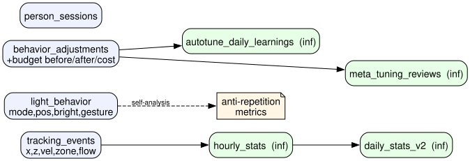
| Table | Stores | Why | Keep |
|---|---|---|---|
tracking_events |
person x/z, velocity, zone, flow_direction | raw interaction record; source of all trend queries | 48 h |
light_behavior |
light's own mode/position/brightness/gesture | self-analysis (anti-repetition) | 48 h |
behavior_adjustments |
every tuning Δ + activity + budget before/after/cost | audit the tuner reads | 48 h |
person_sessions |
visit start/end/duration, zone, flow | dwell/conversion | 48 h |
hourly_stats |
per-hour rollup | permanent trend history | ∞ |
daily_stats_v2 |
per-day rollup (peak/quiet, flow balance) | day-over-day trends | ∞ |
autotune_daily_learnings |
optimal values, param journeys, strategy | next-day blending | ∞ |
meta_tuning_reviews |
diagnosis, old→new config, recommendations | transparent/reversible tuning | ∞ |
Two fields are computed on ingest so trend queries stay cheap: zone (active/passive/unknown) and flow_direction (L→R / R→L / stationary).
◧ Figure A10 — camera → YOLO → floor projection → fusion → OSC → controller.
The camera-to-floor mapping is solved from printed ArUco fiducial markers placed at known positions in the space (P6); detecting them gives the homography/pose that turns pixel coordinates into real-world floor positions.
A single pedestrian step becomes, within ~40 ms: a light reaction, a DB row, and a WebSocket frame. Light output leaves over Art-Net/UDP :6454 as per-panel DMX from a distance-falloff model.
◧ Figure B3 — the spatial plan (this is a strong architectural figure): panels along the storefront; active zone (engaging) close in; passive zone (sidewalk traffic) beyond it; two cameras angled inward; ArUco markers. Coordinates in cm, X along the panels, Z out toward the street.
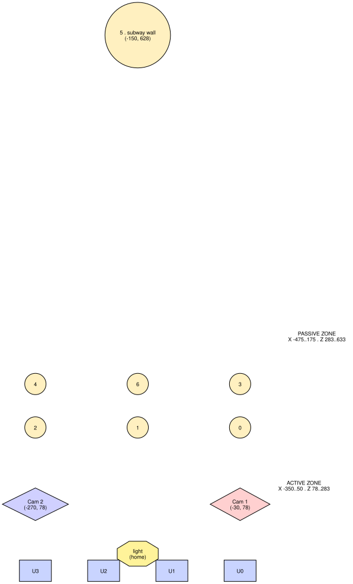
(B3 is pinned to real centimetre coordinates, so the subway-wall marker sits far up-frame; treat it as a scale reference and redraw with filled zone rectangles for the final poster.)
Prose: the public viewer separates "what the light is doing right now" from "what happened over time." Live state streams over WebSocket; long-term trends are pre-computed server-side and published as static JSON — the browser never touches the database or does heavy maths.
◧ Figure A11 — two parallel pipes from controller to browser:
| Plane | Transport | Cadence | Content | Computed where |
|---|---|---|---|---|
| Immediate | WebSocket :8765 | ~15 fps | live light/people/mode/status | controller, sent as-is |
| Trends | static JSON over HTTPS | nightly | hourly curves, peak/quiet, flow balance, mode mix, tuning summary | SQLite (server-side) |
For a 10-image Projects submission, this sequence tells the whole story — now ending on
the complexity→12-values collapse, which is the strongest single idea to leave a reviewer
with. (Diagram IDs in diagrams/.)
B3).A1).A2).A3).A7).A7.3b).A5).C1).C3 + C4, paired).This ordering opens with place (1) and closes with the irreducible output (9–10), so the narrative arc is "a corner of a city → an adaptive temperament → twelve numbers." If you can only spare one figure for the output story, use C1; if two, pair C1 with C3. The A7.x and remaining C figures (C2, C5) are excellent for the talk/poster where you have room beyond the 10-image cap.
Verified call details (ACADIA 2026, call for submissions): theme "Humanism Recoded: Reframing Computation and Making through Embodiment and Culture"; Detroit / Lawrence Technological University, Oct 22–24, 2026. Projects = "600-word text (excluding citations and captions) plus a maximum of 10 images," blind peer-reviewed, published in the proceedings (CumInCAD, DOI) and "exhibited as posters in the Exhibition." Projects should present "built work, speculative prototypes, installations, or experimental workflows demonstrating the integration of computational tools with material, cultural, or social contexts." Projects deadline: June 1, 2026 (final extension). Of the 12 subthemes, the two most relevant here are "Embodied Codes" ("computation situated in bodies, practices, and local contexts") and "Machines that Care" ("robotics and autonomous systems reimagined as partners in repair, care, and cultural making").
ACADIA 2026, "Humanism Recoded: Reframing Computation and Making through Embodiment and Culture," reframes computation around human values, bodies and cultural practice rather than abstracting it away from them — and its Projects category invites "built work, speculative prototypes, installations, or experimental workflows demonstrating the integration of computational tools with material, cultural, or social contexts." Drop Ceiling answers that directly: it is a built, public, 24/7 architectural light installation whose computation is literally embodied in a storefront and encultured by its site. The system does not run a fixed program; it senses the embodied rhythms of a specific Toronto financial-district sidewalk — commute surges, lunch crowds, the dead of night — and recodes its own behaviour around them, learning over days which character "works" at which hour. The interaction budget is the conceptual hinge for the brief: rather than maximising responsiveness, the project deliberately introduces friction, treating restraint and slowness as humane design values and resisting the extractive logic of an always-optimising machine. In this sense the light behaves less like a sensor-actuator and more like an inhabitant that adapts to its neighbours.
Within the Projects category specifically, the contribution is an experimental authoring workflow for adaptive environments: a transparent, three-loop architecture (instant reaction, hourly anticipation, multi-day self-tuning) in which a small set of human-legible "personality" meta-parameters — responsiveness, energy, sociability, exploration, memory — are continuously, accountably retuned from the installation's own interaction history, with every decision logged and even re-published to the public as a daily report. This speaks to the "Machines that Care" and "Embodied Codes" subthemes: an autonomous system reframed not as a controller to be optimised but as a cultural participant that watches, remembers, hesitates, and grows a character in dialogue with the people who pass beneath it. The project's value to the ACADIA audience is methodological as much as aesthetic — it demonstrates how trend analysis, budgeted self-modification, and self-analysis can be composed into an adaptive architecture that remains interpretable and authorable by a designer rather than opaque.
Sources for the conference framing:
ACADIA 2026 Call for Submissions and the
EasyChair CFP. All system facts trace to the
V6.5c source under dc-dev/IO/.
Ready-to-submit draft body — 599 words (the call allows 600, excluding citations and captions). Now closes on the complexity→12-values collapse (§3d–§3f). Everything above is reference/diagram material; this is the actual proposed text. Slot project title, authors and image captions around it. ~1 word of headroom, so any addition needs a matching cut.
Drop Ceiling is a permanent, public light installation in a downtown Toronto storefront: a single luminous point drifts through a field of LED panels behind the glass while, on the sidewalk outside, two cameras quietly watch the people passing by. It is not a motion sensor that flashes on contact, but a system designed to behave like an inhabitant of its corner — one that reacts in the moment, anticipates the rhythms of the street, and slowly grows a character of its own over weeks of operation.
Computationally, the work is organised as three nested control loops running at three timescales. The innermost loop, at thirty frames per second, drives reaction: a behaviour state machine (idle, flow, aware, engaged, crowd) follows whoever is present, layering sixteen small gestures — a nod, a lean, a slow shared "breathing" — that deepen the longer a person stays. The middle loop, at seconds-to-minutes, drives anticipation: the system reads pedestrian trends across nested one-, five-, thirty- and sixty-minute windows, plus a thirty-second flow tracker, and biases where and how energetically the light idles so that it leans toward arriving foot traffic rather than waiting to be triggered. The outermost loop, spanning days, drives self-tuning.
That self-tuning is the conceptual core. The light's expression is governed by a small set of human-legible meta-parameters — responsiveness, energy, sociability, exploration, memory, and a handful of output multipliers — that colour how each behaviour mode becomes movement, brightness, and pulse. Three times a day the system analyses its own interaction database, diagnoses pathologies in its recent behaviour (parameters stuck at limits, modes starved, responses gone static), and rewrites its own tuning configuration, which the running light hot-reloads within seconds. Every decision is logged, and a nightly report republishes the day's patterns to a public web view.
Crucially, the system does not simply maximise responsiveness. An interaction budget meters how much the tuner may change per unit of time: every adjustment spends budget, budget refills slowly, and when it runs low further change is throttled. This deliberate friction — reinforced by mean-reversion toward "home" values and the daily review's ability to retune the budget itself — keeps adaptation slow and intentional rather than twitchy. The result reads less like an optimising machine and more like a temperament: the light can be eager or reserved, brisk or contemplative, and it earns the right to change.
For all this apparatus, the output is radically simple. Thirty times a second the entire system collapses to the state of one virtual point light, read by the ceiling as just twelve numbers — one brightness value per panel, set purely by distance from the light through a shaped, steerable falloff. That gap, between a city-corner's worth of context and twelve bytes on a wire, is where the work locates its meaning.
Drop Ceiling addresses Humanism Recoded by situating computation in a body and a place. Its intelligence is not abstracted onto a screen but embodied in a storefront and encultured by a specific site, whose commute surges, lunch crowds, and dead-of-night quiet it learns and answers. The project speaks directly to the Embodied Codes and Machines that Care subthemes: an autonomous system reframed not as a controller to be optimised but as a cultural participant that watches, remembers, hesitates, and grows a character in dialogue with the people beneath it. Its contribution to the Projects track is as much methodological as aesthetic — an authoring approach for adaptive environments in which a designer shapes a few interpretable personality parameters and lets the installation retune them, accountably, from its lived experience of the street.
The document uses two overlapping vocabularies: concrete software parameters (actual variables in the V6.5c code) and the interaction concepts they implement. They appear scattered through the sections and diagrams; this is the single reference. A recurring source of confusion — flagged here once — is the word "personality": it is not a variable, but the informal name for the set of 12 tunable meta-parameters (§14.1) taken together. When A2 says Loop 3 "reshapes the personality," it means the self-tuner is slowly moving those 12 numbers.
The variables the self-tuning loop is allowed to move (the "personality"). Defined in
MetaParameters (light_behavior.py:429); live values persist in slider_settings.json;
ranges/floors/caps live in autotune_overrides.json and smart_autotuner.py. Split into
two groups by how the tuner treats them.
Personality axes (0.0–1.0; rise with activity):
| Parameter | Plain meaning | Bends these light outputs |
|---|---|---|
responsiveness |
how quickly it reacts | follow-smoothing, move speed, transition durations |
energy |
overall liveliness | pulse rate, max brightness, gesture frequency |
attention_span |
how long it stays focused on one person | follow-smoothing, dwell rewards, mode stickiness |
sociability |
eagerness to engage | gesture chance, entrance flash, engaged brightness |
exploration |
appetite to wander/visit new space | wander-box size, wander interval, position variety |
memory |
how strongly the past suppresses repeats | anti-repetition strength, trend-influence weight |
Output multipliers (scale the physical outputs; inverse-adjusted by the tuner):
| Parameter | Plain meaning |
|---|---|
brightness_global |
master brightness gain |
speed_global |
master movement-speed gain |
pulse_global |
master pulse/breathing-rate gain |
follow_speed_global |
how fast it chases a tracked person |
dwell_influence |
how strongly dwell-time bonuses apply (0 = off, 2 = double) |
idle_trend_weight |
how strongly passive-zone trends bend idle behaviour |
(Three further multipliers exist in the dataclass — trend_weight, time_of_day_weight,
anti_repetition_weight — but are not actively retuned by the V6 autotuner.)
The ≈9 scalars on the PointLight object that the panels actually read each frame
(PointLight, lightController_osc.py:2217). Everything in §14.1 exists to set these.
| Field | Meaning |
|---|---|
position [x, y, z] |
the light emitter's location in the panel field (cm) |
current_brightness |
instantaneous intensity = brightness_min + (brightness_max − brightness_min) × (sin(pulse_phase)+1)/2 |
brightness_min / brightness_max |
the floor/ceiling the pulse swings between |
pulse_speed |
ms per breathing cycle (drives pulse_phase) |
falloff_radius |
distance at which a panel's contribution reaches zero |
falloff_scale [sx, sy, sz] |
per-axis stretch of the falloff (anisotropic / ellipsoidal beam) |
falloff_rotation |
Y-axis rotation of the falloff (lets a gesture steer the beam) |
move_speed |
how fast position interpolates toward its target |
Govern how the self-tuner changes §14.1 (smart_autotuner.py, autotune_overrides.json).
| Term | Meaning |
|---|---|
home_values |
the per-parameter rest value mean-reversion pulls toward (time-of-day interpolated) |
safe_floors |
minimums the tuner won't go below (prevents a "zombie" unresponsive light) |
caps |
soft maximums per parameter (prevents an obnoxious light) |
PARAM_RANGES |
the absolute min/max bounds for each of the 12 parameters |
budget (max, restore_seconds, cost_scale) |
the interaction budget: pool size, refill time, and price per unit of change |
reversion (base, progressive) |
mean-reversion strength — constant pull + extra pull when far from home |
curiosity (interval, strength) |
periodic small random nudge to keep the parameter space explored |
| gradient / engagement score | the fitness signal the tuner climbs (EngagementScorer); higher = more/better engagement |
| Term | Meaning |
|---|---|
| active zone | the near region where presence counts as engaging the installation |
| passive zone | the sidewalk region beyond it; presence counts as passing traffic |
passive_rate |
people per minute in the passive zone — drives the IDLE/FLOW/AWARE tiers |
flow_direction / flow_balance |
net walking direction, −1 (R→L) … +1 (L→R) |
zone / flow_direction (DB) |
fields computed on ingest and stored per tracking_events row |
OSC /tracker/... |
the messages carrying live counts and per-person positions into the controller |
| Art-Net / DMX | the protocol/values sent out: 12 channels, one 0–255 brightness per panel |
The conceptual layer: what the light is doing, named for legibility (in the code, the public viewer's status text, and this document).
| Concept | What it means |
|---|---|
| personality | informal name for the 12 meta-parameters (§14.1) as a set — the light's evolving disposition |
| mode | which of five behaviour states the light is in: IDLE, FLOW, AWARE, ENGAGED, CROWD |
| stickiness | a mode change only commits after its conditions persist for a minimum time (anti-flicker) |
| gesture | a brief, named motion overlaid on the mode (nod, lean, sway, orbit, settle, breathe, bloom, sweep, focus…) |
| dwell phase | how engagement deepens with time-in-zone: notice → greet → engage → bond |
| breathing | the continuous sinusoidal brightness/scale modulation — the light's visible "rhythm" |
| bloom | a momentary full-panel illumination (a high point during engagement/crowd) |
| aggression | a 0–1 "attention-seeking" level: rises when ignored, falls when engaged, capped by hour of day |
| flow | the real-time dominant walking direction of passive traffic (also the name of a mode) |
| almost-engaged | a passer-by slowing near the active zone — a candidate the light tries to draw in |
| proximity | how close the nearest person is to the panels — makes the light slower/brighter/tighter up close |
| Concept | What it means |
|---|---|
| the three loops | reaction (~30 Hz), anticipation (sec–hours), self-tuning (hours–days) — see §2 / A2 |
| PUSH / RESIST / META | the three forces on the parameters: live signal pushes change, friction resists it, the meta-review re-governs how hard each acts (A7) |
| interaction budget | the friction: a metered allowance that makes self-adaptation deliberate rather than twitchy |
| mean-reversion | the steady pull of every parameter back toward its home_value |
| curiosity | the deliberate small random exploration of the parameter space |
| meta-review | the deep 8-hour analysis run 3×/day that diagnoses and rewrites the tuning constants (§14.3) |
| daily learning | the midnight blend of a 7-day, time-of-day engagement average into the next day's starting personality |
| self-analysis | the light reading its own recorded behaviour to avoid repetition (position entropy, response similarity) |
| regime | predicted traffic context — dead / trickle / steady / rush / event — used to vary tuning aggressiveness |
| trend window | one of the nested look-back periods (1 / 5 / 30 / 60 min) the anticipation loop reads |
| engagement | a person entering the active zone; the event the whole system is implicitly optimising toward |
| the pinch point | the moment all complexity collapses to the ≈9-value light state before fanning out to 12 panel values (§3d, C1) |
This section bridges two documents: the project's conceptual writing (the
DropCeiling-overview text — open-source intent, light-as-character, AI-agent
development, measurable evolution) and the technical system anatomised in §1–§14. The
software sections above answer "how does it work"; this section answers "why does the way
it works matter," and proposes how to assemble both into the 600-word ACADIA Projects
submission and its 10 figures. Everything here is a proposal to react to, not settled
text.
Two reconciliations to make before submitting (places where the overview and the code currently diverge — pick one and make the doc consistent):
- Control protocol. The overview says panels are driven over the open 0–10V protocol; the V6.5c code sends Art-Net/DMX (
StupidArtnet, universe 0). Likely both are true (Art-Net → a DMX/0–10V converter at the fixtures), but the submission should state the actual signal path in one sentence. The "12 values" story (C-series) is unaffected — it's 12 per-panel intensities either way.- Site framing. The overview is site-specific (Haworth showroom, 55 University Ave, the column "alcove," DesignTO). Earlier draft text here said "financial district" generically. Use the real site; the alcove-between-columns detail is a gift — it is the physical reason the active/passive zone split exists (§14.4).
- Run length. Both source documents predate the final run. The installation ultimately ran 24 hours a day for 54 days, taking in ~1 million inputs from unique active and passive visitors. Update any "until March 10 / seven weeks / day-25" phrasing to the final figures.
Lead with this; it changes how every other claim in the submission is read. The installation ran continuously, 24/7, for 54 days, and over that time ingested ~1,000,000 inputs from unique active and passive visitors on the sidewalk. (The raw position-event stream behind those visitors is larger still — each visitor produces many position samples as they cross the field.)
Run at a glance (estimated). The full database is not accessible at writing; the figures below are extrapolated from 34 days of surviving daily reports, which show very stable, repeatable day/week patterns (weekday commute peaks, quiet nights, lighter weekends). Per-day averages from those reports are scaled to the full 54-day run.
| Metric | Per day (observed avg) | Over 54 days (est.) | Basis |
|---|---|---|---|
| Tracking events (raw position samples) | ~275,000 | ~15 million | mean of 34 daily reports (median ~265k/day) |
| Unique visitors (active + passive) | ~18,500 | ~1 million | back-calculated from the stated ~1M total |
| Short-term evaluations (autotuner cycle, ~8 s) | ~10,800 | ~580,000 | SmartAutoTuner update interval |
| Flow-tracker updates (~1.5 s) | ~57,600 | ~3.1 million | FlowState, anticipation loop |
| Long-term evaluations (meta-review, 3×/day) | 3 | 162 | autotune-meta-review.timer |
| Daily-learning cycles (midnight) | 1 | 54 | DailyReportScheduler + V6 on_daily_report |
Rounded, illustrative. "Short-term evaluations" = per-cycle parameter retunes; "long-term evaluations" = the deep 8-hour database reviews. Numbers are deliberately conservative — state them as approximate ("~", "roughly") in the submission.
◧ Figure D1 — run totals over 54 days (the same table as a log-scale ladder; good as a single "scale" slide):
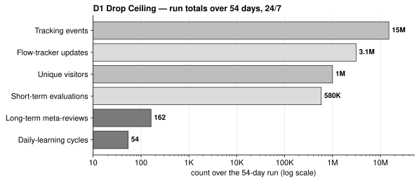
◧ Figure D2 — fast vs slow (the friction argument as a picture: tens of thousands of fast adjustments a day, governed by a handful of slow reviews):
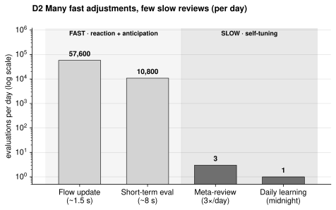
(Both rendered by diagrams/src/D_scale_charts.py via matplotlib; re-run to update if the
final database yields hard totals.)
Why the scale matters, concretely:
Phrasing seeds: "24 hours a day for 54 days." · "roughly one million encounters." · "a population, not a prototype." · "fifty-four days of uninterrupted attention." · "every one of a million inputs distilled, live, to twelve numbers."
One verification to do before you print a number: confirm whether ~1M counts unique visitors or unique tracked inputs/sessions. The 34 surviving daily reports log ~9.3M raw position events (the basis for the ~15M/54-day estimate above) and a cross-day people tally in the hundreds of thousands — so "~1 million inputs/encounters" is the safest phrasing unless you have a firm unique-visitor query. State the unit explicitly (visitors vs inputs vs events) so it can't be challenged.
| Conceptual goal (from the overview) | How the software embodies it (this guide) | Best evidence / figure |
|---|---|---|
| Re-use of ubiquitous infrastructure — turn forgettable office ceiling panels into an expressive medium | The entire output layer is deliberately minimal: 12 dimmable panels addressed as one brightness each. The sophistication is upstream, not in exotic hardware. | C1 / C4 (12 values); §3d |
| Open hardware + software — published toolkit, standard protocols, 3D-printed connectors | Standard parts throughout: YOLO, OSC, Art-Net/DMX (or 0–10V), SQLite, Three.js — no proprietary stack. The architecture is the contribution, and it's legible/reproducible. | A1 (all standard components) |
| Light as a character with goals + evolving methods | The 12 meta-parameters are the character; modes + gestures + dwell phases are its repertoire; aggression/curiosity give it moods and whims. | §3 / §14.5; A3, A6 |
| A personality that learns over hours and days | The three-loop architecture, self-tuning (A7), and daily learning — "day 25 ≠ day 1" is literally the drift of those 12 numbers, logged and auditable. | §2 / §6; A2, A7 |
| Measurable evolution ("more confident, less repetitive") | Self-analysis metrics (position entropy, response similarity) + the meta_tuning_reviews audit table make evolution a measurable, reversible claim — and at ~1M inputs over 54 days it is backed by a population, not an anecdote. |
§15-0; §7 / §8; A7.5, A7.7 |
| Implicit, intuitive interaction — "no app, no screen, no instructions" | Input is presence and flow, not deliberate command; the active/passive zones and proximity response read the body, not an interface. | §4 / §5; A5 |
| Friction / restraint as a value — calm at rush hour, deliberate change | The interaction budget, mean-reversion, and time-of-day aggression caps encode restraint as engineering: the system can act but chooses the rate. | §5 / §6; A6, A7.3b |
| The 3D model as shared reference / "the installation's brain" | The calibrated spatial model (zones, panel/camera coordinates, falloff geometry) is the substrate every behaviour reads and the AI agents authored against — BIM-thinking at installation scale. | §9 spatial frame; B3, C2 |
| Built with AI coding agents (a method, not just a tool) | The whole structured-documentation practice — these diagram guides, the parameter ranges, the test/verify loops — is the agent-authoring method made visible. Made tractable by giving the model a spatial substrate to reason over (§15d). | this document set; §15d |
| The control software is a 3D game | The controller is a pygame + OpenGL real-time 3D scene ("3D Light Controller V6.5"): physical space, digital model, and control code share one runtime and one coordinate frame. | §15d; B3, C2 |
| Public transparency — live web view of the light's mind | The two web planes expose both the live state and the long-term trends/reports — the system explains itself in plain language to passers-by. | §10; A11 |
Each reframes the same system around a different load-bearing idea. The strongest for Humanism Recoded is Framing A, but B and C are viable and reusable for talks/abstracts.
Framing A — "An adaptive temperament from twelve bytes." Spine: the gap between enormous situated context and a near-trivial output (C1) is where the meaning sits. Restraint, legibility, and character over spectacle.
Framing B — "Re-coding ubiquitous infrastructure." Spine: open-source re-use — the most invisible object in the built environment (the office ceiling panel) made expressive with only standard, published parts.
Framing C — "The model became the brain" (AI-agent authoring). Spine: a 3D spatial model as the shared reference that both human and AI agents author against — BIM-thinking scaled down, computation situated in a spatial substrate.
Recommendation: lead with A, fold in B and C as one sentence each. A gives the piece its meaning, B gives it reproducibility/relevance, C gives it methodological novelty — reviewers reward all three, but only one can be the title idea.
The 600-word arc (refines §13 with the conceptual layer):
The 10 figures (maps the §11 set to the conceptual beats):
Threads to make explicit that the technical guide currently under-states:
Open questions for you (these change the emphasis):
This is the substance behind Framing C, and the project's clearest methodological contribution. The argument: a spatial-interactive system is hard for a code-generating model to author because the problem is fundamentally geometric, not textual. Drop Ceiling's answer was to make the geometry a first-class, shared artifact that both the human and the model read and write. Two pieces did this — a 3D control runtime, and a lightweight 3D modeller that emits "model context."
Piece 1 — the control software is itself a 3D game (pygame + OpenGL).
The final controller (lightController_osc.py, "3D Light Controller V6.5") is not a
headless script; it is a real-time 3D scene built in pygame + PyOpenGL
(pygame.display.set_mode(..., DOUBLEBUF | OPENGL), gluPerspective, hand-rolled
draw_panel / draw_sphere / draw_ellipsoid_wireframe / draw_tracked_person). This
collapses three things that are usually separate into one runtime and one coordinate
frame:
Why it matters for the submission: the "digital twin" is not a visualisation bolted on
afterward — it is the program. You can watch the light think in the same 3D space the
panels live in. It is also why the C-series collapse is legible: the OpenGL scene and the
Art-Net output read the same PointLight state (§3d–§3f, C2).
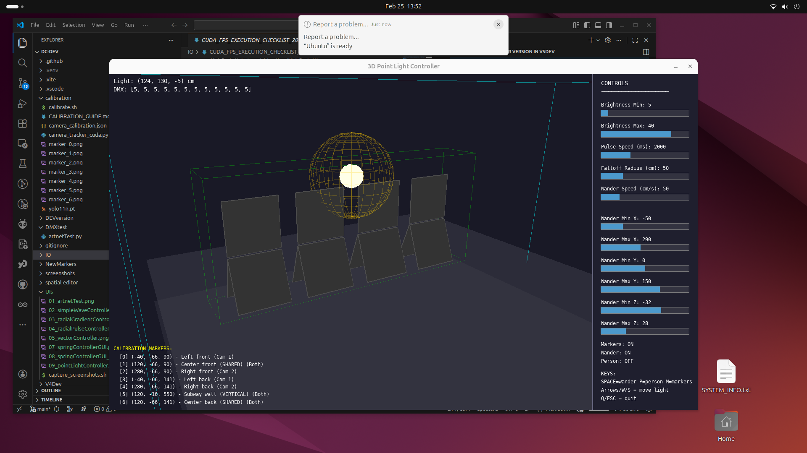
Photo P4 — the control software as a 3D game: physical layout, the virtual light, and the live control parameters share one runtime and one coordinate frame.Piece 2 — a lightweight 3D modeller that generates model context (spatial-editor/).
To get a coding model (Opus 4.5 / 4.6) to reason correctly about that space, the project
needed a way to hand it the geometry in a form it could use. The result is a purpose-built
browser 3D editor (React + Three.js / react-three-fiber, in spatial-editor/) whose
explicit job is to export spatial context for an agent prompt:
src/schema.js): every object has geometry, a
role (actuator / sensor / zone / reference / structural), tags, and
relationships. Object types include camera (with an FOV frustum), zone (bounded
trigger volume), mesh (imported OBJ), point, box, plane. The schema is designed
to be "human-readable as JSON and agent-parseable for spatial context."src/utils/contextExport.js): turns the scene into a structured
natural-language Markdown summary — grouped by role, listing positions, bounds, and
relationships — that pastes "directly into an agent prompt." This is the literal bridge
from a 3D model to a language model's working context.src/utils/dropCeilingConverter.js) that round-trips the production
IO/world_coordinates.json into the editor and back, validating the schema against the
real installation.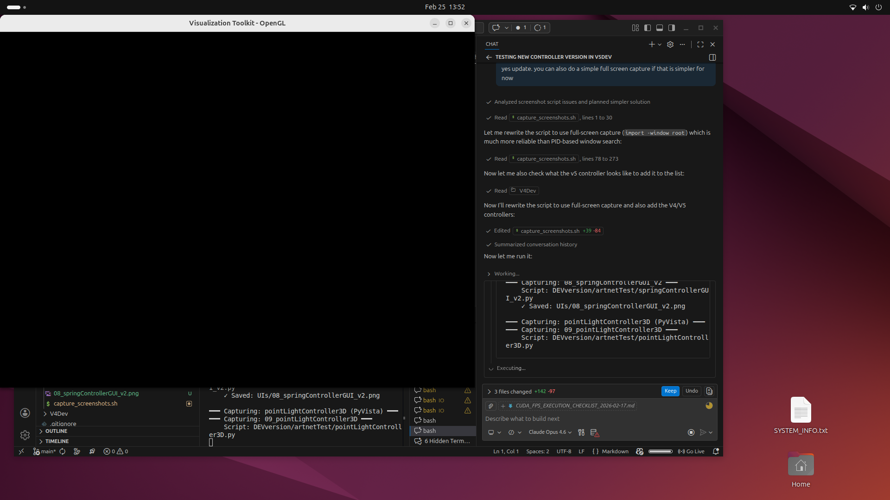
Photo P5 — the human–AI authoring method in practice: the spatial runtime and the coding agent side by side, the model reasoning over the shared geometry. (Crop/clean before publishing — this is a working desktop capture, not a finished figure.)Piece 3 — the JSON context files (the durable shared reference).
Between the editor and the running system sits a set of plain-JSON context files that are
the agreed geometry — the same files the human edits, the model reads, and both
camera_tracker_osc.py and lightController_osc.py consume at runtime:
| File | Holds | Read by |
|---|---|---|
world_coordinates.json |
coordinate system, panel unit + subpanel positions/angles, camera positions, zone bounds | controller, tracker, editor converter |
camera_calibration.json |
per-camera intrinsics + solved pose (the ArUco/homography result) | tracker (floor projection), controller (camera viz) |
tracker_settings.json |
live tracker tuning (confidence, fusion/match distances, smoothing) | tracker |
slider_settings.json |
the 12 meta-parameters' live values | controller |
autotune_overrides.json |
the tuner's home values / floors / caps / budget | controller (hot-reload), meta-review (writes) |
The method in one sentence (for the text): the 3D model was not a picture of the installation — it was the installation's shared brain, a spatial substrate that the designer and the AI coding agents both authored against, exported as natural-language context for the model and as JSON for the runtime. This generalises beyond Drop Ceiling: it is a repeatable pattern for authoring spatial-interactive systems with coding agents — give the model geometry as structured context, not prose.
◧ DRAW — Figure E1 (proposed, not yet rendered): the authoring loop. A triangle:
(1) 3D modeller (spatial-editor) → exports → (2) model context (Markdown scene
summary + JSON files) → feeds → (3) AI coding agent (Opus 4.5/4.6) → writes →
(4) control code + the pygame 3D twin → which is observed back in the same coordinate
frame → informing the next edit to the modeller. Contrast with the runtime loops (A2):
this is the build-time loop, the one that produced the system. (Say the word and I'll
render E1 in the diagram set.)
Honest scoping notes (so the claim survives review):
This document is now a broad reference for several publications. This section narrows back to the one deliverable: the ACADIA 2026 Projects submission — 600 words (excluding citations/captions) + max 10 images, blind peer-reviewed, exhibited as a poster. Three complete outlines follow, each built on a different spine from §15b. All three fit the word/image budget. Pick one; they are mutually exclusive as structures but share most of the same material.
Shared constraints (apply to all three):
Best fit for Humanism Recoded (Embodied Codes + Machines that Care). Leads with the artwork and its meaning; the method is a closing note. Lowest risk, highest thematic fit.
| § | Paragraph (≈ words) | Carries | Figure(s) |
|---|---|---|---|
| 1 | The corner. Site, body, alcove; presence-not-input; the light as an inhabitant. (110) | hook + site | P1 installation photo |
| 2 | A character with traits. Six personality parameters; modes/gestures/dwell; reads flow and bodies, not commands. (120) | what it is | A3 modes; P4 3D twin |
| 3 | Three timescales + friction. Reacts now, anticipates the hour, retunes over days; the interaction budget makes adaptation deliberate. (130) | the engine | A2 loops; A7 / A7.3b |
| 4 | A million encounters. 24/7 × 54 days, ~1M inputs; the temperament formed, measurably (audit + self-analysis). (110) | scale = evidence | D1 or D2 |
| 5 | Twelve numbers. The collapse: all of it distilled, 30×/s, to 12 panel values; restraint as the point. Close on re-use + transparency. (110) | the meaning | C1 (+ C3) |
Best fit for Built Grounds + Digital Commons*. Leads with the open-source re-use of the most invisible object in the built environment. Most accessible/reproducible framing.*
| § | Paragraph (≈ words) | Carries | Figure(s) |
|---|---|---|---|
| 1 | The forgettable made expressive. Standard office ceiling panels + 0–10V; 3D-printed connectors; open toolkit on GitHub. (120) | hook + openness | P2 unit geometry; P1 |
| 2 | A pixel made of a panel. 12 panels as one spatial display; the virtual point light; brightness by distance. (110) | the mechanism | C1 or C4 wiring |
| 3 | Behaviour from standard parts. YOLO + OSC + Art-Net + SQLite; a character (traits/modes) with no proprietary stack. (120) | the system | A1 pipeline; A3 |
| 4 | It learns in public. Three loops + friction; 24/7 × 54 days, ~1M inputs; transparent live/▶trend web views. (130) | adaptation + scale | A2; D1; A11 |
| 5 | Anyone can build one. Reproducibility, the toolkit as contribution; what you'd change to re-deploy. (110) | the payoff | P3 system diagram |
Best fit for Embodied Codes + Collective Intelligence*. Leads with the human–AI authoring method — the spatial substrate that let coding agents reason about a geometric problem. Most methodologically novel; highest reviewer-interest ceiling, highest risk.*
| § | Paragraph (≈ words) | Carries | Figure(s) |
|---|---|---|---|
| 1 | A geometric problem for a text model. The artwork in one breath, then the authoring challenge: agents can't see space. (110) | hook + problem | P1; P5 authoring session |
| 2 | A spatial substrate. The pygame 3D twin + the spatial-editor that exports scene → natural-language context + JSON. (130) |
the method | P4 twin; E1 authoring loop |
| 3 | What the agents built. Character, gesture library, self-tuner — authored against the shared model. (110) | the result | A3; A7 |
| 4 | Then it ran itself. Build-time vs runtime AI; 24/7 × 54 days, ~1M inputs; self-tuning + audit. (120) | the distinction + scale | A2; D2 |
| 5 | Collapse + claim. 12 values; and the transferable pattern: give models geometry as context. (120) | meaning + generalisation | C1; (E1 reprise) |
| If your priority is… | Use | Lead image | Must-build |
|---|---|---|---|
| Thematic fit + the artwork's meaning | Outline 1 | P1 | — (all figures exist) |
| Accessibility, openness, reproducibility | Outline 2 | P1 + P2 | — (all figures exist) |
| Methodological novelty (AI authoring) | Outline 3 | P1 + P5 | E1 render; P5 cleanup |
Recommendation: lead with Outline 1 and fold one sentence of B (open toolkit) and one of C (built with coding agents) into §5 — it keeps the strongest thematic spine while signalling the other two contributions. Promote to Outline 2 or 3 only if the call for your specific session/subtheme rewards the toolkit or the method over the artwork.
Cross-cutting to-dos before drafting prose (all outlines):
Verified against the ACM Digital Library full-text collection (dl.acm.org) on
2026-05-31. Venue, year, pages, and DOI are copied exactly as listed in ACM's catalogue.
Grouped by the four areas requested; these are candidates — read abstracts before
citing. ACADIA proceedings are indexed in CumInCAD, but these ACM sources are the
verifiable anchors. (Also maintained standalone in
ACADIA_2026_REFERENCES.md.)
Framing note on "AR." Drop Ceiling is light in physical space driven by camera tracking — no headset, no screen-space overlay. The precise ACM term is Spatial Augmented Reality (SAR) / projection-based AR: digital response registered to real surfaces, viewable without worn devices. Framing the project as SAR is both more accurate and better supported by the literature below. The fiducial-marker calibration that registers the cameras to the floor is itself a classic AR registration technique, tying §1/§15d (markers) to §17.3 (AR).
Artificial Markers: A Comprehensive Systematic Review and Design Framework. Benedito Ribeiro Neto, Bianchi Meiguins, Tiago Araújo, Carlos dos Santos. ACM Computing Surveys (CSUR) 58(9), Article 236, pp. 1–35, Feb 2026. https://doi.org/10.1145/3793661 → Strongest single anchor for the marker layer: a current CSUR survey of fiducial markers (ArUco and beyond), pose-estimation accuracy, and a design framework.
Robust and Scalable Indoor Robot Localization Based on Fusion of Infrastructure Camera Feeds and On-Board Sensors. Poornima J D, Raghu Krishnapuram, Mukunda Bharatheesha, Bharadwaj Amrutur, Suresh Sundaram. AIR '23: 6th Int'l Conf. on Advances in Robotics, Article 41, pp. 1–7, Nov 2023. https://doi.org/10.1145/3610419.3610460 → Directly on point for fusing multiple fixed camera feeds into one pose estimate.
MoiréBoard: A Stable, Accurate and Low-cost Camera Tracking Method. Chang Xiao, Changxi Zheng. UIST '21: 34th ACM Symp. on User Interface Software and Technology, pp. 881–893, Oct 2021. https://doi.org/10.1145/3472749.3474793 → Optional: low-cost camera tracking/registration in an HCI venue; useful for the accuracy/cost trade-off that motivated a marker-based setup.
ArUcoTUI: Software Toolkit for Prototyping Tangible Interactions on Portable Flat-Panel Displays with OpenCV. Rong-Hao Liang, Steven Houben, Krithik Ranjan, S. Sandra Bae, Peter Gyory, Ellen Yi-Luen Do, Clement Zheng. TEI '26, Article 58, pp. 1–8, Mar 2026. https://doi.org/10.1145/3731459.3779317 → Supporting: a recent ACM example of ArUco + OpenCV as the interaction substrate.
A Tutorial on Multi-Armed Bandit Applications for Large Language Models. Djallel Bouneffouf, Raphaël Féraud. KDD '24: 30th ACM SIGKDD Conf. on Knowledge Discovery and Data Mining, pp. 6412–6413, Aug 2024. https://doi.org/10.1145/3637528.3671440 → Concise, citable ACM overview of MAB methods (incl. Thompson sampling) and the exploration/exploitation framing — grounds the bandit without a math detour.
What You Reward Is What You Learn: Comparing Rewards for Online Speech Policy Optimization in Public HRI. Sichao Song, Yuki Okafuji, Kaito Ariu, Amy Koike. HRI '26: 21st ACM/IEEE Int'l Conf. on Human-Robot Interaction, pp. 187–195, Mar 2026. https://doi.org/10.1145/3757279.3785589 → Unusually close analogue: online learning that adapts behaviour policy in a public space, explicitly contrasting "fixed, hand-tuned parameters" with online adaptation to "non-stationary conditions" — almost exactly Drop Ceiling's self-tuning argument, and it discusses reward design (the engagement-score question).
Thompson Sampling with Unrestricted Delays. Han Wu, Stefan Wager. EC '22: 23rd ACM Conf. on Economics and Computation, pp. 937–955, Jul 2022. https://doi.org/10.1145/3490486.3538376 → Optional/technical: regret bounds for Thompson sampling under delayed feedback — relevant because engagement outcomes arrive delayed relative to the expression choice.
A Behavioral Model for Exploration vs. Exploitation: Theoretical Framework and Experimental Evidence. Jingying Ding, Yifan Feng, Ying Rong. EC '25: 26th ACM Conf. on Economics and Computation, p. 88, Jul 2025. https://doi.org/10.1145/3736252.3742497 → Optional: frames the exploration–exploitation trade-off itself (curiosity vs. mean-reversion in the tuner) via the bandit lens.
DroneSAR: Extending Physical Spaces in Spatial Augmented Reality Using Projection on a Drone. Rajkumar Darbar, Joan Sol Roo, Thibault Lainé, [+1]. MUM '19: 18th Int'l Conf. on Mobile and Ubiquitous Multimedia, Article 4, pp. 1–7, Nov 2019. https://doi.org/10.1145/3365610.3365631 → Clean, citable definition of SAR ("transforms real-world objects into interactive displays … without the need to wear any special [gear]") — ideal for defining the project's AR category.
Diminishable Visual Markers on Fabricated Projection Object for Dynamic Spatial Augmented Reality. Hirotaka Asayama, Daisuke Iwai, Kosuke Sato. SIGGRAPH Asia '15 Emerging Technologies, Article 7, pp. 1–2, Nov 2015. https://doi.org/10.1145/2818466.2818477 → Ties SAR + fiducial markers together in one reference — the same marker-based registration idea Drop Ceiling uses, framed within SAR.
FamiliAR Feedback: Investigating Feedback Modality and Familiarity in Classroom Settings Using Spatial Augmented Reality. Nick Wittig, Yannick Dohmen, Jonathan Liebers, [+3]. MUM '25: 24th Int'l Conf. on Mobile and Ubiquitous Multimedia, pp. 273–284, Nov 2025. https://doi.org/10.1145/3771882.3771883 → A current SAR study showing the term/method are live in recent ACM literature.
Foundational anchor to add (verify before citing): Bimber & Raskar, Spatial Augmented Reality: Merging Real and Virtual Worlds (A K Peters, 2005) is the canonical SAR reference. It is a book, not ACM-hosted, so it was not verified in DL — cite from the original if you want the field-defining reference alongside the ACM examples.
Engaging Passers-by with Rhythm: Applying Feedforward Learning to a Xylophonic Media Architecture Facade. Binh Vinh Duc Nguyen, Jihae Han, [+3]. CHI '23: 2023 CHI Conf. on Human Factors in Computing Systems, Article 182, pp. 1–21, Apr 2023. https://doi.org/10.1145/3544548.3580761 → Closest sibling project found: a permanent media-architecture facade that engages passers-by and applies learning — directly comparable on permanence, public-space engagement, and adaptive behaviour.
Towards Responsive Architecture that Mediates Place: Recommendations on How and When an Autonomously Moving Robotic Wall Should Adapt a Spatial Layout. Binh Vinh Duc Nguyen, Jihae Han, Andrew Vande Moere. PACMHCI 6(CSCW2), Article 467, pp. 1–27, Nov 2022. https://doi.org/10.1145/3555568 → On responsive architecture and when an autonomous system should adapt — speaks to the friction/restraint argument (acting deliberately, not constantly).
Using Embodied Audio-Visual Interaction to Promote Social Encounters Around Large Media Façades. Luke Hespanhol, Martin Tomitsch, Oliver Bown, [+1]. DIS '14: 2014 Conf. on Designing Interactive Systems, pp. 945–954, Jun 2014. https://doi.org/10.1145/2598510.2598568 → A large-scale interactive light intervention in urban space addressing the addressivity/engagement challenges of public media.
Playing with the Spirit of a Place: Designing Urban Interactions with Hybrid-Resolution Media Facades. Peggy Liu, Luke Hespanhol. MAB '20: 5th Media Architecture Biennale Conference, pp. 31–41, Oct 2021. https://doi.org/10.1145/3469410.3469414 → Explicitly pairs "responsive low-resolution LED lighting" with high-res displays — supports the deliberately minimal 12-panel palette as a design stance, not a limitation.
The Dual Skins of a Media Façade: Explicit and Implicit Interactions. Claude Fortin, Kate Hennessy. SIGGRAPH '15 Art Papers, pp. 348–356, Jul 2015. https://doi.org/10.1145/2810177.2810181 → On implicit vs. explicit interaction at a Montréal media façade — relevant to Drop Ceiling's mostly-implicit interaction model and its Canadian site.
| Need | Use |
|---|---|
| Markers / homography / fusion | #1 (CSUR marker survey) + #2 (multi-camera fusion) |
| Self-tuning algorithm | #6 (online policy adaptation in public HRI) + #5 (MAB overview) |
| AR framing | #9 (SAR definition) (+ Bimber & Raskar book from origin) |
| Public-space sibling work | #12 (learning media facade, CHI '23) |
"[+N]" = additional authors truncated in ACM's list view; expand on the article page before final citation. All DOIs verified resolvable on dl.acm.org; pages/years copied from ACM catalogue entries on 2026-05-31.
This section documents the actual 54-day deployment as it shows up in the data: when
the software changed, what the database captured, where it broke, and how it was recovered.
It is a key part of the project's story — not a caveat to hide but a narrative about an
adaptive system that was built while it ran, whose own reporting pipeline became the
backup that saved data its database discarded. Full working notes and the merge/estimation
methods live in analysis/DATA_TIMELINE_AND_MERGE.md;
the rendered figure is diagrams/F1_software_data_timeline.
Across the run the installation generated ~23.3 million tracking events over 48 days of coverage (Jan 29 – Mar 17 2026). The software was under continuous development the entire time — versions V2 → V4 → V5 → V6 → V6.5c — so what the database captured changed as the software changed. The data is therefore not a flat log; it is a record of a system and its instrument co-evolving in public.
The full record survived as two intact SQLite files (both pass integrity checks, identical schemas), each covering a different stretch:
| Copy | Size | Covers |
|---|---|---|
"early" (IO/tracking_history.db) |
487 MB | Feb 12–25 |
"late" (tracking_history.db) |
628 MB | late-Jan, Feb 25 – Mar 17 |
They were merged into a single read-only analysis database
(analysis/merged_run.db), de-duplicated, with every row tagged by source. The early copy
fills exactly the window the late copy was missing.
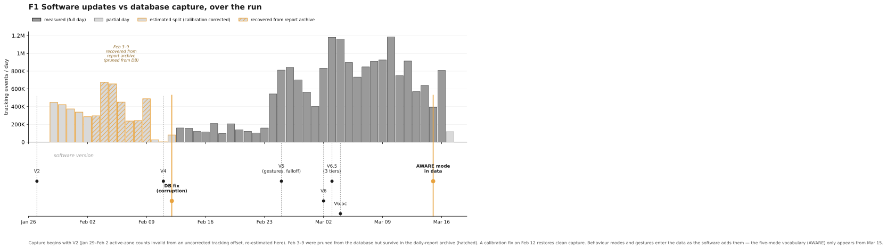
Figure F1 — capture volume and quality (top) aligned to the software versions (bottom): what the database recorded tracked what the software could do.The data records the software's evolution; cross-checked against git commit dates:
| Date | What the data shows | Software event |
|---|---|---|
| Jan 27–29 | run begins | V2, active/passive fixes |
| Feb 12 | capture stabilises after trace days | fixed corrupt database (calibration/DB fix) |
| Feb 23 | light_behavior logging begins; 13 gestures + 4 modes first appear |
V5-era behaviour system |
| Feb 25 | sweep gesture appears |
V5 (anisotropic falloff, SWEEP/FOCUS) |
| Mar 2–4 | redeploy churn, then stabilises | the big v6 update → V6.1* → V6.5c |
| Mar 3 | three-tier passive behaviour | V6.5: passive-flow, three tiers |
| Mar 15 | aware mode first appears in the data; playful gesture |
V6.5 three-tier reaching steady logging |
| Mar 16 | focus gesture appears |
late V6.5 gesture set complete |
Consequences for any longitudinal claim:
aware only exists from Mar 15; before
that the light had four modes, not five.light_behavior (the light's own state log) is sparse — only ~8 substantial days
(Feb 23–25, Mar 15–17) — so light-state/self-analysis figures are windowed, not run-wide.An uncorrected tracking offset early in the run mapped nearly every pedestrian into the active zone. The active-share is the tell:
| Window | Active share |
|---|---|
| Jan 29 – Feb 2 (offset uncorrected) | 97.1% |
| Feb 13 – Mar 17 (after the fix) | 3.6% |
A 97% active rate is physically impossible for this site (the alcove is a minority destination off a busy sidewalk). Those five days' active/passive labels are invalid — people were detected, but mis-zoned.
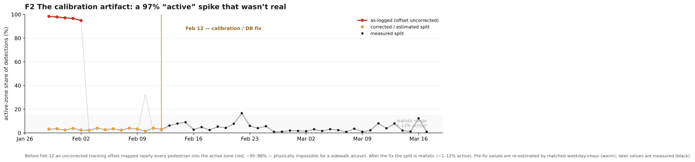
Figure F2 — the artifact made visible: the impossible early "active" spike and its correction. The split was re-estimated (clearly flagged) by matching each early hour to the measured active share of the same weekday + hour in the valid post-fix window, which yields a believable 2.4–3.9%. Stored ashourly_stats_corrected, preserving the originals in active_orig/passive_orig plus an
estimated flag. (A separate pre-V6 bug produced impossible raw z values up to 26 km on
Feb 23–24 — filtered by the zone logic, but a reason to trust aggregated ratios over raw
coordinates for early dates.)
Both databases were missing Feb 3–9 entirely (raw events self-prune at 48 h). But the
daily-report JSON files generated at the time preserved full 24-hour breakdowns for
every one of those days. The reports are a frozen snapshot of data the database no longer
holds — the tiered-retention design (raw → hourly aggregate → daily report) doing
exactly what it was meant to. Those 7 days were ingested back in (168 hours, ~3.0 M
events, tagged src='report'), giving continuous coverage with no gaps:
Figure F3 — how the lost week was recovered: the daily reports outlived the raw data they were derived from.| Source | Days | Events |
|---|---|---|
| early (DB) | 14 | 2.47 M |
| report (recovered) | 7 | 3.04 M |
| late (DB) | 29 | 17.80 M |
| total | 48 | 23.3 M |
The authoritative run-wide table is hourly_stats_filled (continuous,
provenance-tagged, artifact-corrected).
meta_tuning_reviews is
empty in both DBs); per-visit dwell sessions (person_sessions empty).The cleanest framing is not to apologise for the gaps but to foreground them: this was an adaptive installation built while it ran, where the instrument matured alongside the artwork, where a calibration error was caught and corrected mid-run, and where the system's own daily reporting recovered data its database had pruned. For a project about a system that learns and evolves in public, the data's own messy, self-healing history is part of the contribution — evidence of a real deployment, not a demo.